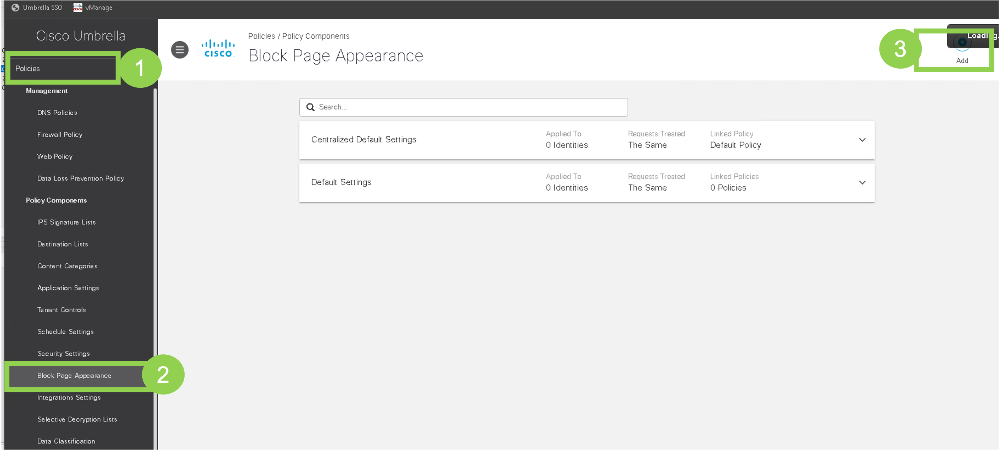
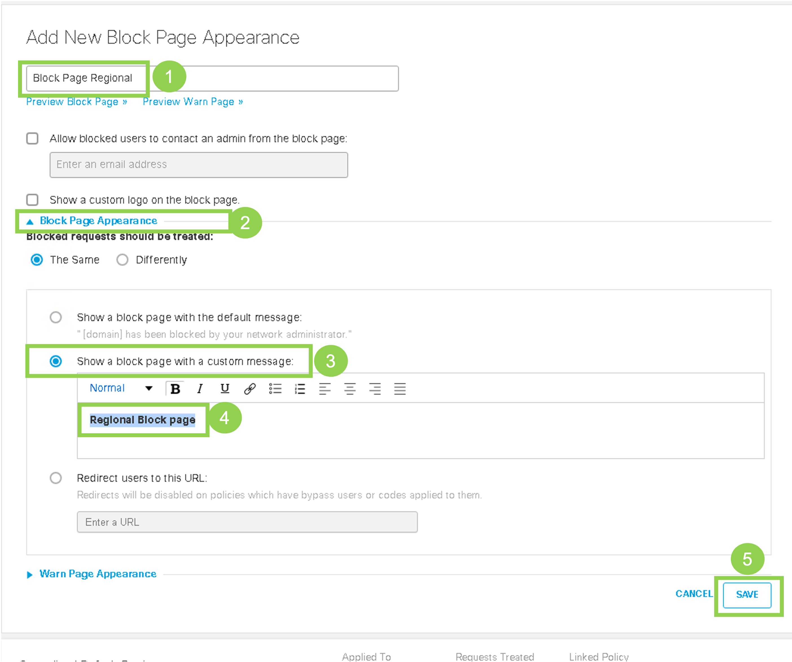
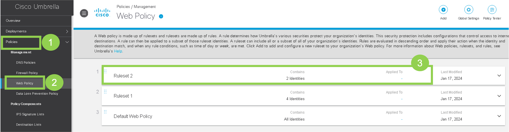
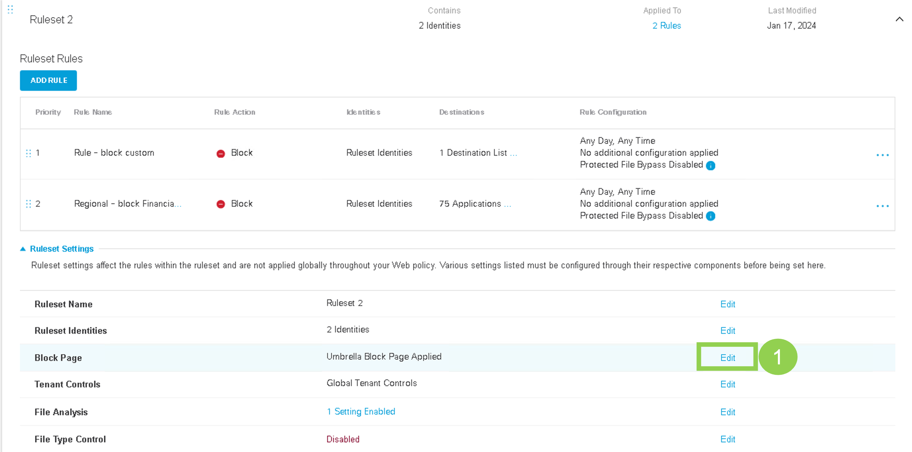
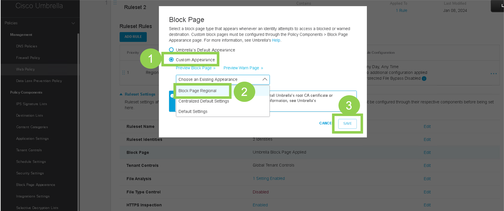
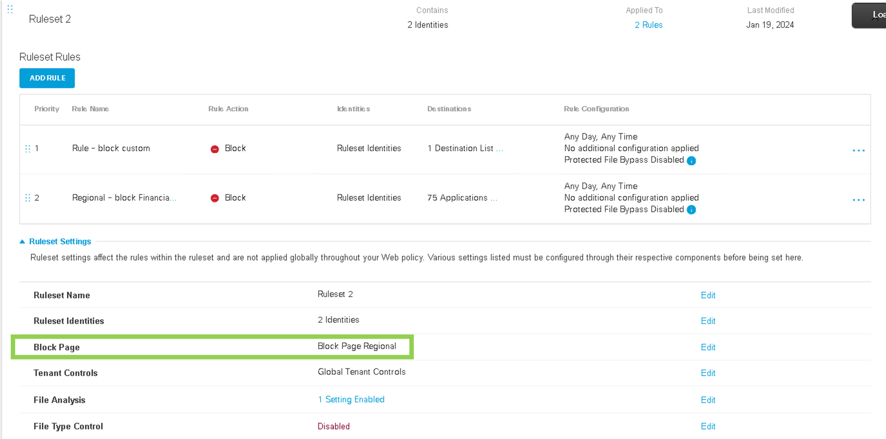

Task 10 - Block Page
This task guides through the process of customizing the block page displayed to users when a web policy is enforced on regional sites, Site-100 and Site-400.
Step 1 - Umbrella Web Policy
Objective: Configure a new block page on the Umbrella Dashboard.
1. Accessing Block Page Settings:
- On the RDP session (jumphost), logon to Umbrella Dashboard by clicking on Google Chrome Browser bookmark named
Umbrella SSO. It will open the Umbrella dashboard and auto-login using single-sign-on.
2. Configuring the Block Page:
- Navigate to Policies > Policy Components > Block Page Appearance. Then click Add on the top right to add a new Block page as shown in below screenshot:

- On the
Add New Block Page Appearanceweb page, configure the below settings:- Name:
Block Page Regional - Click on
Block Page Appearanceto expand it's settings - Click on
Show a block page with a custom message - In the text box, enter text of
Regional Block Page(You may enter your own text here!) - Click
Saveat the bottom right
- Name:

3. Applying the Block Page to Web Policy
- On Umbrella dashboard, navigate to Policies > Management > Web Policy and click on previously configured
Ruleset 2

- On the Rule 2 page, navigate to Ruleset Settings and scroll down to Block Page setting and click
Edit:

- On the
Block pageselect Custom Appearance and then selectBlock Page Regionalfrom the dropdown menu and click Save:

- Now the newly created
Block Page Regionalshould appear for under the Settings ofRuleset 2:

Step 2 - Verify new Block Page
Objective: Validate the new block page for Site-400 and confirm the original block page for Site-300.
1. Testing on Site-400:
- Launch console access to ubuntu
Site400-Ubuntu-VPN10host by using mRemoteNG application. Login with credentials ofviptela - Use Chromium Browser to navigate onto traditional websites, such as
www.cisco.com. Access to this website should work. - Use Chromium Browser to navigate to
www.chase.com. As per our Umbrella Web Policy, this sites should be blocked and, as expected, the newly created Umbrella block page will appear.
2. Testing on Site-300:
Now lets validate that the original Block page is shown for SD-WAN Site-300.
- Launch console access to ubuntu Site300-Ubuntu-VPN10 host by using mRemoteNG application. Login with credentials of
viptela - Use Chromium Browser to navigate onto traditional websites, such as
www.cisco.com. Access to this website should work. - Use Chromium Browser to navigate to
www.cnn.com. As per our Umbrella Web Policy, this sites should be blocked and, as expected, the original block page will appear.
Conclusion:
With the successful implementation of Task 10, the regional sites now have a customized block page, enhancing the user experience when web policies are enforced. This customization allows for a more tailored approach to displaying block messages, aligning with the specific needs and branding of the organization.